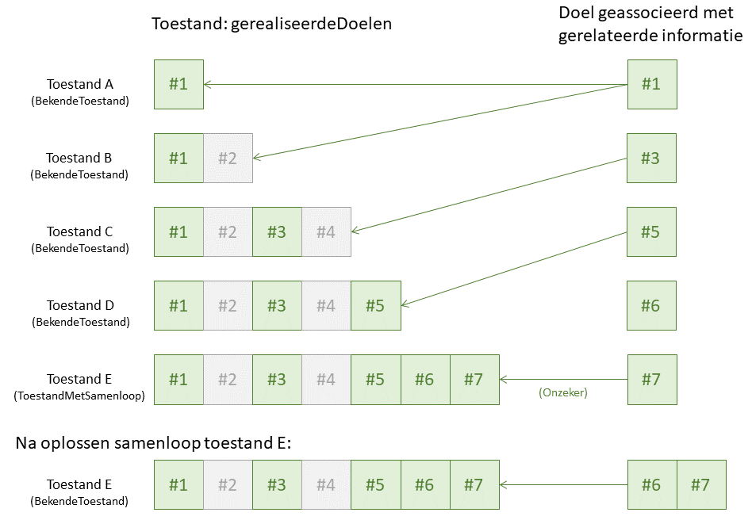

Synchronisatie van regelgeving-gerelateerde informatie
Regelgeving-gerelateerde informatie
Deze leeswijzer bespreekt de regelgeving-gerelateerde informatie, dat is informatie die:
geen onderdeel is van STOP;
een (machine-begrijpbare) representatie is van informatie die in regelgeving (regeling, informatieobject) is vastgelegd.
Hoewel de totstandkoming van de informatie geheel onafhankelijk kan plaatsvinden van de totstandkoming van de regelgeving zelf, vormt de regelgeving-gerelateerde informatie die wel samen met de regelgeving wordt opgesteld en gewijzigd een belangrijke categorie. In het geïntegreerd proces van bekendmaken en consolideren is daar nadrukkelijk rekening mee gehouden. Voorbeelden van dergelijke informatie:
informatie over Omgevingswet-besluiten zoals in het informatiemodel IMOW is beschreven;
vertaling van regelgeving naar toepasbare regels voor gebruik in DSO-LV zoals in de standaard STTR is beschreven.
Om dit soort informatie eenvoudig synchroon te houden met de geldende regelgeving wordt in STOP het concept doel gebruikt. Een Doel wordt geïdentificeerd met een URI volgens de naamgevingsconventie, net zoals alle andere entiteiten.
Synchronisatie: samen met regelgeving
Een systematische beschrijving van de mogelijkheden tot synchronisatie wordt aan de hand van scenario's gegeven. Eén scenario (samen met regelgeving) wordt hier in het kort beschreven omdat dit het aangeraden scenario is voor gerelateerde informatie die in samenhang met de regelgeving wordt opgesteld en gewijzigd.
Uitgangspunt voor dit scenario is:
Elke wijziging van regelgeving en van gerelateerde informatie wordt gegroepeerd per doel, dat staat voor één stel (samenhangende) wijzigingen die op één moment in de tijd geldig worden.
Elke kleinste eenheid van wijziging van gerelateerde informatie (zoals een element of object in het informatiemodel) is geassocieerd met één regeling of één informatieobject als work. Omdat een wijziging van een informatieobject ook leidt tot een wijziging in de geboorteregeling en een informatieobject veelal specifiek is voor die regeling en alleen via die regeling wordt aangepast, is het vaak voldoende om de associatie alleen met de regeling te leggen.
Het proces van wijzigen van gerelateerde informatie vertrouwt voor de detectie van consolidatieproblemen mee met het consolidatieproces voor de regelgeving zelf. Voor de gerelateerde informatie is ook beschreven hoe omgegaan wordt met situaties waarin de inhoud van de regelgeving (nog) niet bekend is.
STOP beschrijft de regelgeving aan de hand van de volgende verschillende modules:
de toestanden voor een geconsolideerde regeling/informatieobject geven aan welke versies van de regelgeving op welk moment in de tijd geldig zijn;
de proefversies voor een besluit geeft voor (ontwerp-)besluiten aan hoe de regelgeving zou luiden als het besluit ongewijzgd in werking zou treden;
De LVBB kan deze modules in principe leveren; voor de mate van ondersteuning van de uitlevering daarvan wordt verwezen naar de documentatie van de verschillende koppelvlakken.
Alle drie modules leggen een verband tussen een versie van de regelgeving (zoals door het bevoegd gezag is opgesteld en via een besluit of ander bericht is uitgewisseld) en de wijzigingen die in de regelgeving verwerkt zijn. Dat laatste is gecodeerd in gerealiseerdeDoelen: een opsomming van de doelen waarmee de wijzigingen geassocieerd zijn. Daarnaast wordt er onderscheid gemaakt tussen Bekende..., waarvoor vaststaat hoe de regelgeving juridisch luidt, en ...MetSamenloop, waarbij er consolidatieproblemen zijn gedetecteerd waardoor geen bekende versie van de regelgeving overeenkomt met hoe de regelgeving juridisch luidt. Proefversies voor besluiten zijn altijd bekende versies.
Om regelgeving-gerelateerde informatie te synchroniseren met de geldende regelgeving moet naar de toestanden gekeken worden van de regeling/informatieobject waarmee de gerelateerde informatie is geassocieerd. (Het mechanisme werkt op een vergelijkbare manier voor proefconsolidaties en proefversies.) Omdat de regelgeving in het algemeen vaker zal wijzigen dan de gerelateerde informatie, zal een deel van de gerealiseerdeDoelen voor een toestand (proefconsolidatie, proefversie) overeenkomen met doelen waarvoor de gerelateerde informatie is opgesteld of gewijzigd. Het recept is:
Laat uit de gerealiseerdeDoelen alle doelen weg waarvoor de gerelateerde informatie niet is gewijzigd.
De gerelateerde informatie ontstaan uit de wijziging voor een specifiek doel hoort bij de toestanden waarvoor dat doel de laatste is in de gerealiseerdeDoelen.
Als de toestand een bekendeToestand is dan is de gerelateerde informatie betrouwbaar. Als de toestand een ToestandMetSamenloop is dan is de gerelateerde informatie niet betrouwbaar en kan er later nog een nieuwe versie van de informatie uitgewisseld worden. Dat zal niet altijd gebeuren, omdat bevoegd gezag niet altijd verplicht is de consolidatieproblemen op te lossen.
Het mechanisme is geïllustreerd in onderstaande figuur.

Bij het oplossen van consolidatieproblemen wordt de versie van de regelgeving (en ook de gerelateerde informatie) geassocieerd met meerdere doelen: de doelen waarvan het gelijktijdig geldig worden heeft geleid tot het ontstaan van de consolidatieproblemen. In dat geval wordt de tweede stap in het recept aangepast:
De gerelateerde informatie ontstaan uit de wijziging geassocieerd met meerdere doelen hoort bij de toestanden waarvoor één van die doelen het laatste doel in de gerealiseerdeDoelen is, en alle andere doelen in gerealiseerdeDoelen voorkomen.